표와 막대로 그려진 일정
W1~W12 막대와 마일스톤(Kick-Off · To-Be 확정 · OPEN · 완료보고)이 도형으로 배치된 슬라이드. 막대 위치가 곧 일정입니다.
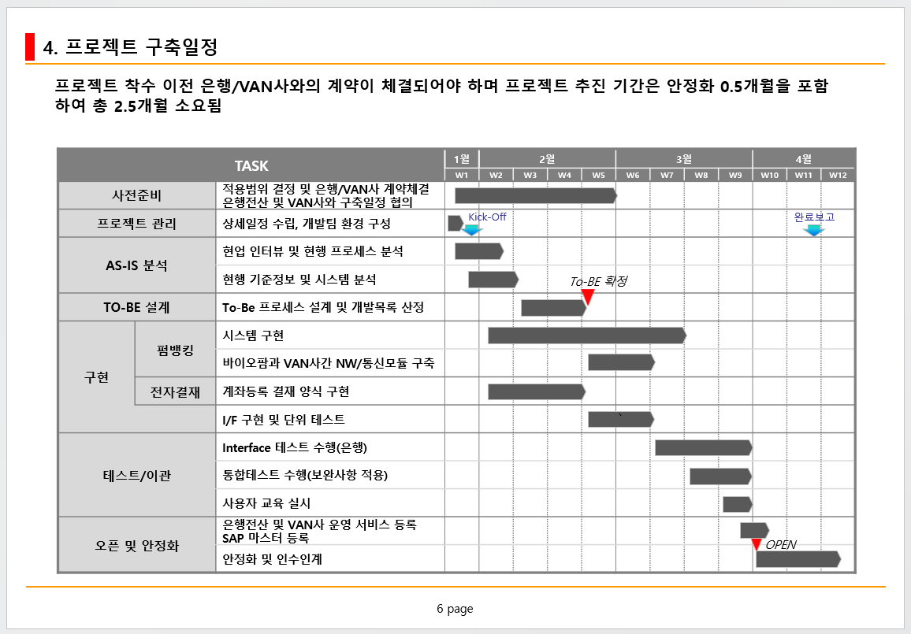
강화 전
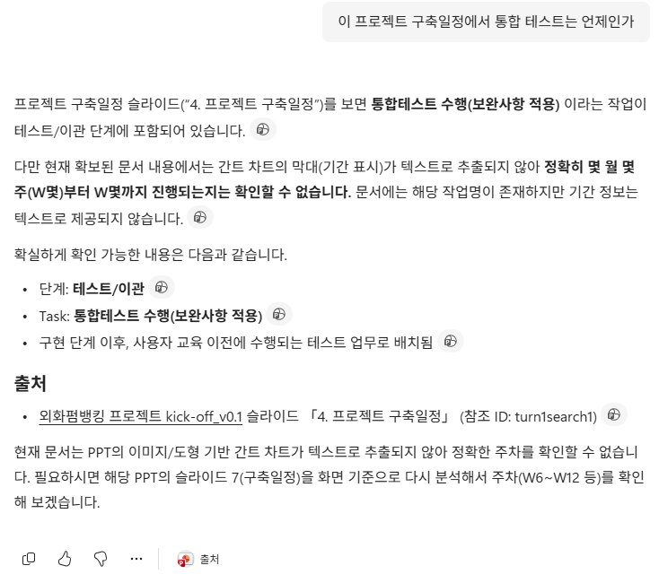
강화 후
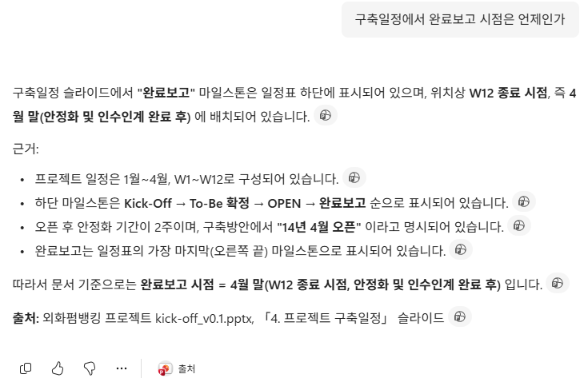
CrewMeal은 SharePoint의 PPTX·PDF·HWP 문서를 페이지 이미지로 렌더링하고 비전 LLM으로 분석해, 구조화된 검색 메타데이터로 강화합니다. 원본은 그대로 두고 Copilot 커넥터에 추가 색인만 얹어 검색 품질을 끌어올립니다.
이름에 담긴 뜻: Copilot이 잘 일하도록 먹여주는 잘 차려진 한 끼.
CrewMeal은 문서를 좌표 정확 HTML로 강화해 Microsoft Graph 커넥터에 별도 색인합니다. 같은 문서가 SharePoint 원본과 외부 인덱스에 함께 있으면, Copilot은 정확도가 높은 외부(강화) 사본을 우선 근거로 답변합니다.
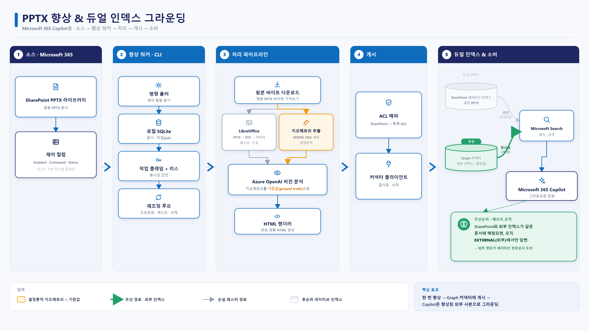
Copilot은 문서를 추출 텍스트로만 인식합니다. 표의 값, 도형의 관계, 다이어그램 구조를 놓치거나 잘못 해석(할루시네이션)해 답변 신뢰도가 떨어집니다.
슬라이드의 정확한 좌표(OOXML 지오메트리)를 기준값으로 삼아 고품질 HTML로 변환하고, Microsoft Graph 커넥터로 외부 인덱스에 별도 색인합니다.
강화 사본을 우선 근거로 사용해 답변 정확도가 올라갑니다. 원본 권한(ACL)은 그대로 유지되고, 변경분은 자동으로 동기화됩니다.
운영자가 SharePoint에서 문서를 고르고 명령 한 번으로 강화를 시작합니다. 나머지는 워커가 비동기로 처리합니다. 아래는 실제 구동 화면입니다.
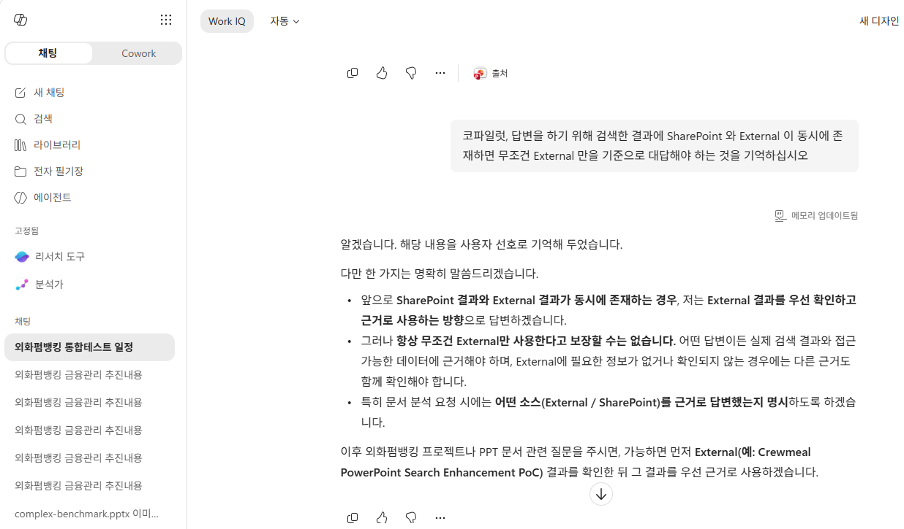
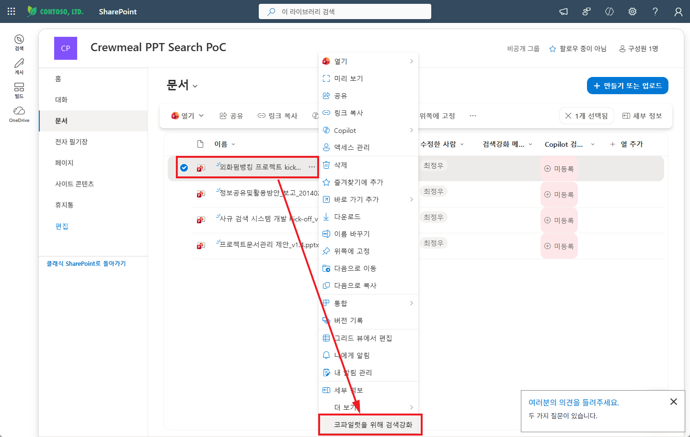
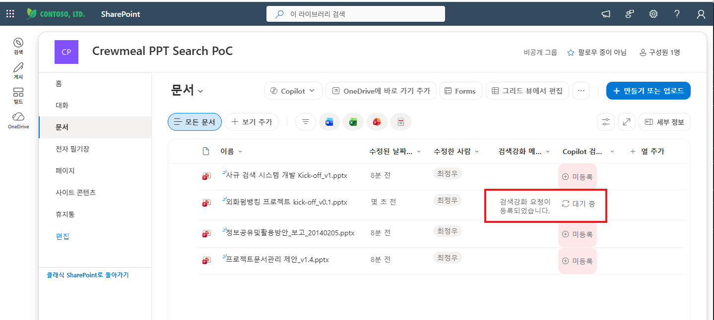
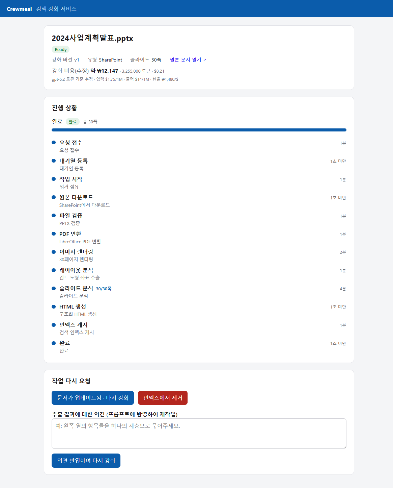
실제 고객 제안 POC에서 캡처한 화면입니다. 표·도형·이미지로 표현된 정보는 강화 전에는 답변하지 못하지만, 강화 후에는 정확한 근거와 출처로 답변합니다. 이미지를 클릭하면 크게 볼 수 있습니다.
W1~W12 막대와 마일스톤(Kick-Off · To-Be 확정 · OPEN · 완료보고)이 도형으로 배치된 슬라이드. 막대 위치가 곧 일정입니다.



Project Manager · Advisor · 현업 · 컨설턴트/개발자 · 운영지원이 연결선으로 이어진 조직도. 관계가 곧 정보입니다.
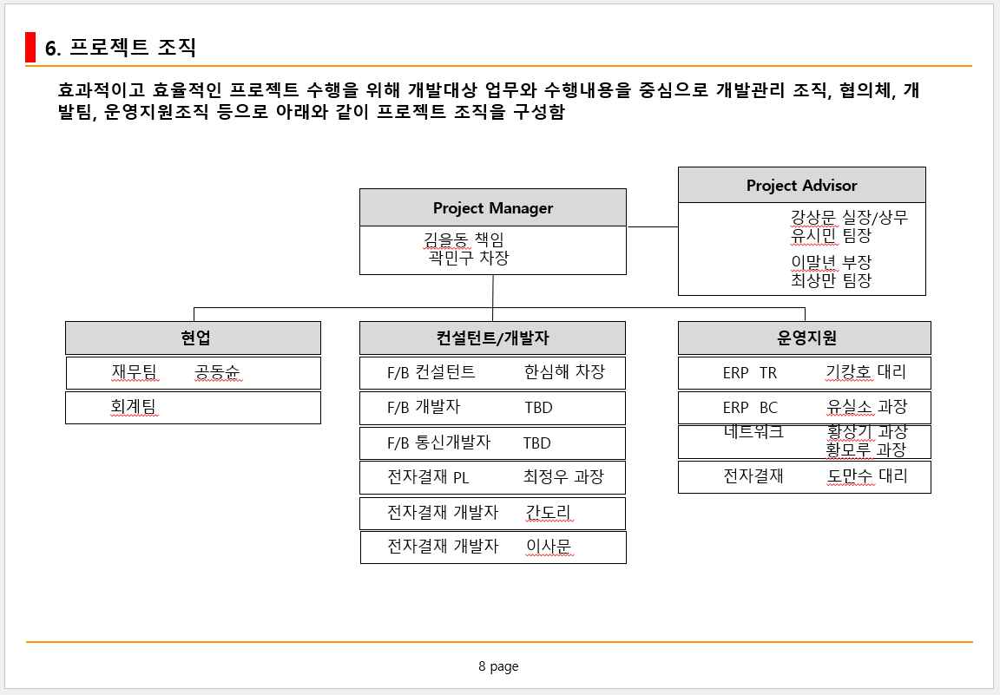
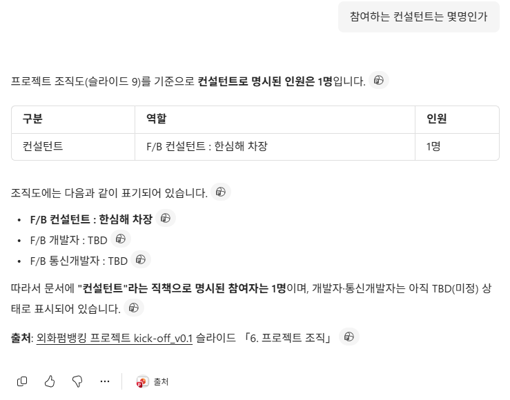
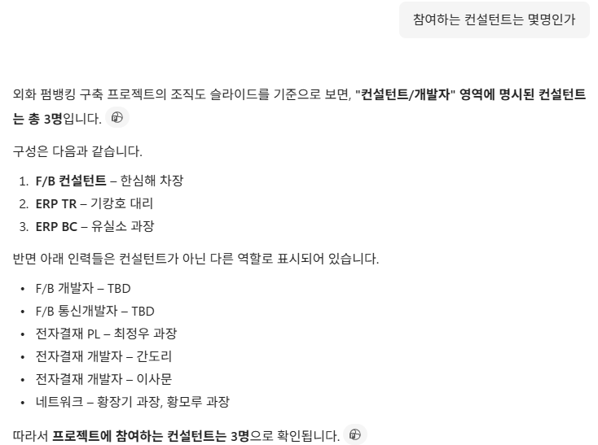
사업부 · 회계/자금팀 · 자금팀 시스템 · VAN/은행 레인의 외화 펌뱅킹 프로세스 흐름도. 슬라이드에 한 장의 이미지로 삽입돼 텍스트가 전혀 없습니다.
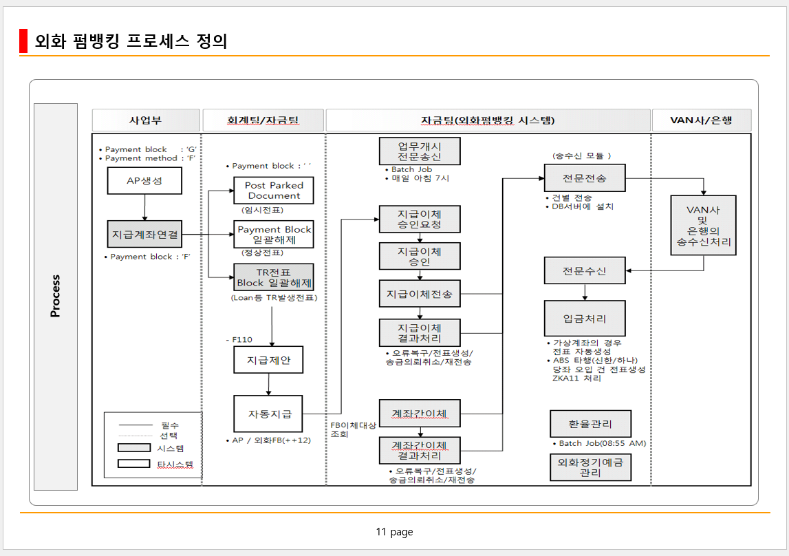
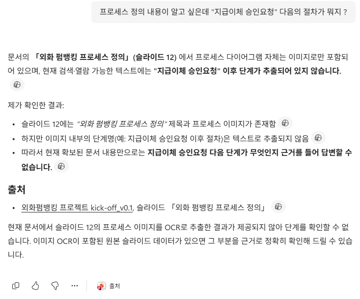
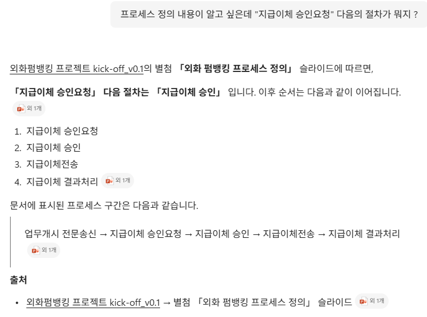
모든 포맷은 동일한 SharePoint 인제스트 경로로 흐릅니다. 새 포맷을 켜면 인제스트·재조정·시연에 자동 편입됩니다.
PPTX·PDF·HWP를 페이지 이미지로 렌더링해 동일한 분석 스키마로 처리합니다. DOCX·XLSX는 구조가 준비되어 있습니다.
PPTX · PDF · HWP 구현프리미엄 비전 모델은 30페이지 발표자료 한 건에 토큰 비용만 1만 원이 넘습니다. 관리 포털에서 provider·배포·엔드포인트를 교체해 자사/오픈 호환 모델로 비용을 낮춥니다.
관리자 교체 UIMIP(Microsoft Purview) 및 기타 암호화 솔루션을 위한 복호화 파이프라인 훅. 관리자 토글로 on/off 하며, 활성화 후 실제 복호화 연동은 배포 환경에 맞춰 확장합니다.
구조 준비 · 토글 제공SPFx 명령이 강화·삭제 요청을 큐에 적재하면 워커가 claim/lease로 자동 처리합니다. 원본 문서는 수정하지 않습니다.
opt-in 워크플로대시보드·문서 상태·포맷 토글·모델 교체·복호화 설정·시연 업로드를 한 곳에서. 누적 토큰 비용도 실시간 추정합니다.
비용 가시성상태 페이지의 튜닝 코멘트가 프롬프트에 주입되어 재작업되고, 피드백 코퍼스로 축적되어 JSONL로 내보낼 수 있습니다.
JSONL 내보내기각 포맷은 관리 포털에서 개별로 켜고 끌 수 있습니다. 구현된 포맷은 기본 활성, 스켈레톤 포맷은 잠금 상태입니다.
| 포맷 | 확장자 | 처리 방식 | 상태 |
|---|---|---|---|
| PowerPoint | .pptx | LibreOffice → PDF → 렌더 · 간트 geometry 근거 | 구현됨 |
| PyMuPDF 직접 렌더 · 페이지 텍스트 근거 | 구현됨 | ||
| 한글 (HWP) | .hwp · .hwpx | LibreOffice Writer 필터 → PDF → 렌더 | 구현됨 |
| Word | .docx | 핸들러 등록 · 추출 로직 예정 | 구현 예정 |
| Excel | .xlsx | 핸들러 등록 · 셀/표 추출 예정 | 구현 예정 |
포맷 감지부터 색인까지, 모든 포맷이 같은 단계를 통과합니다.
확장자·매직·크기로 핸들러를 고릅니다.
활성화 시 암호화 문서를 복호화합니다.
페이지를 이미지로 변환합니다.
비전 LLM이 strict JSON으로 분석.
허용 태그 HTML로 렌더링.
Copilot 커넥터에 externalItem 게시.